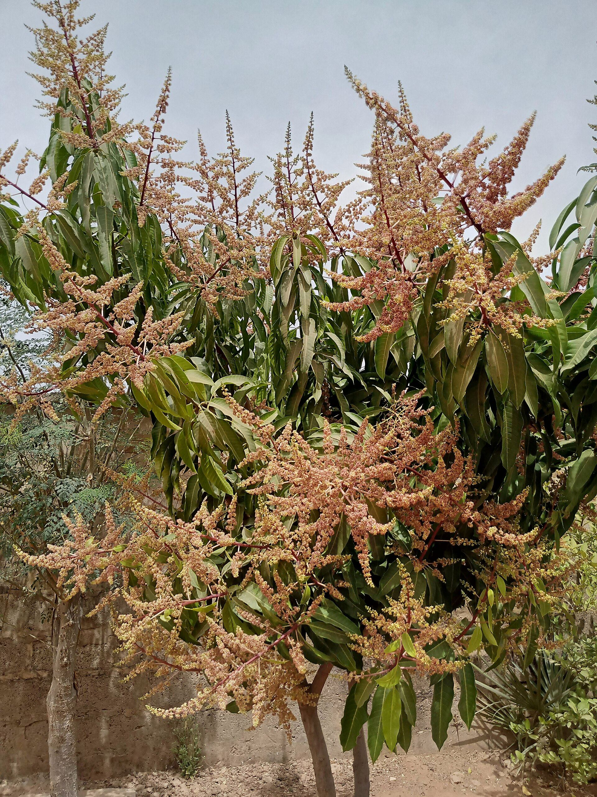

Fruit Farming
Sweet, orchard-fresh mangoes, citrus and pineapples — sold fresh and processed into juices, concentrates and dried fruit.
Overview
Orchards With Purpose
Our orchards and fruit blocks are planted with improved varieties selected for yield, flavour and shelf life. Drip irrigation from our water systems keeps trees productive through the dry season, and fruit that isn't sold fresh flows into our processing hub for juice, concentrate and dried-fruit production.
- Improved, high-yield fruit varieties
- Drip irrigation and mulching for water efficiency
- Integrated pest management, minimal residues
Our Orchards
Fruits We Grow
Mango
Keitt, Osten and local varieties.
Citrus
Sweet orange, lemon and lime blocks.
Pineapple
Sweet smooth-cayenne plantations.
Banana & Pawpaw
Fast-cycle fruit for steady supply.
Fresh & Processed Fruit Supply
Retail packs, bulk crates and processed fruit products available.